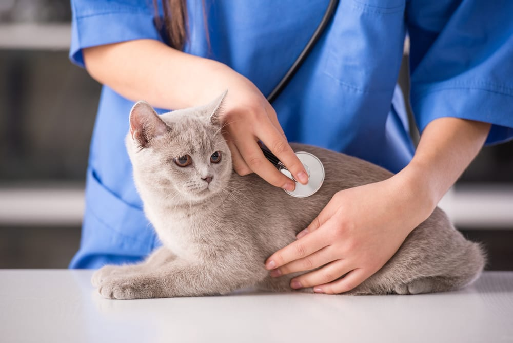

Why do I love cats?
Cats are adorable, playful and mysterious creatures. They bring joy and comfort to my daily life. With their independent personalities and natural charm, cats always know how to make their owners feel loved.

Favorite cat breeds
I love many different breeds of cats, each with its own beauty and personality. Here are some of my favorites:
- Persian Cat
- British Shorthair Cat
- Maine Coon Cat
- Mèo Ragdoll
- Siamese Cat
How to take care of cats
Cat care requires special attention. From providing the right diet to grooming and health, every step helps keep your cat happy and healthy.
